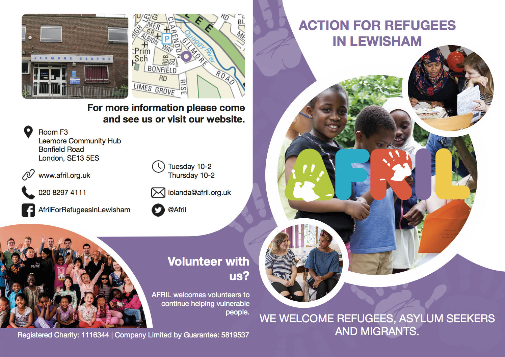
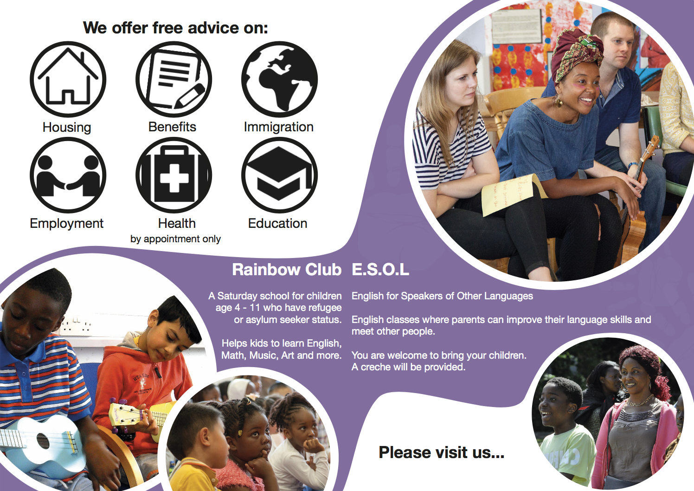

Action For Refugees In Lewisham
AFRIL is a charity in Lewisham, London, working with refugees and asylum seekers to relieve poverty and social isolation. AFRIL continue to help people in the local community each week - with education through their Rainbow Club Saturday School, family support services, and access to emergency supplies. I have been volunteering with them to update their promotional material since they have recently updated their logo.
Leaflets
For my first project at AFRIL, I had to re-design their two main leaflets with their new updated logo.
The information leaflet highlights all the services that they offer as well as where to find the charity. I wanted to make the leaflet clear and concise so anyone, even someone who does not understand English could understand what AFRIL does. If I was to re-do the leaflet, I think I would have made the fonts a bit smaller and tightened it all up a little bit but since it was my first time ever doing a printed leaflet, I wanted to air on the side of caution and make the font size a bit bigger.
 

The second leaflet was targeted to people that would want to volunteer and donate to the charity. For this leaflet, I focused more on providing information about the charity and what they do. If I was to revise this brochure I would try and find better suiting images. Ones that better reflected what it is like to volunteer for AFRIL and try and add more testimonies.
Annual Reports
I have also worked on designing AFRIL's last 2 Annual Reports. Because of how many projects AFRIL has, one of the main challenges I faced was keeping them down to a reasonable length (2016-2017 was 42 pages and 2017-2018 was 22 pages). This is to make sure all the information inside is only the essentials for what a reader would need to know. For me, what was most important in both reports was capturing the essence of the amazing work that AFRIL does. I have tried to do this through pictures and highlighting case studies and quotes.

I also occasionally product flyers for AFRIL. They are also a great tool to help communicate all of the different services and events that AFRIL have to offer.